| 日付 | 2017年10月15日（日） |
|---|---|
| メンバー | 家族（妻、長女・6歳、長男・4歳） |
| アクセス | 車 |
大雨の週末、どこに行こうかと雑誌をめくっていて
ギャラクシティという施設を見つける。
公営のため無料の施設であり、楽しそうな場所なので、
行ってみることにする。
オープン30分前の8時半に駐車場に到着したが、並んでいる車の列は少なく
9時着でも問題はなさそうだ。
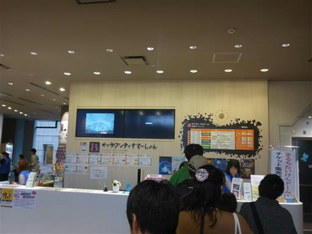
人気のクライミングウォールはすぐに定員に達する。
あちらこちらで整理券を配っているのだが、クライミング系は整理券の列に
家族全員で並ぶ必要があるため、人気のあるものから並ぶのが重要だ。
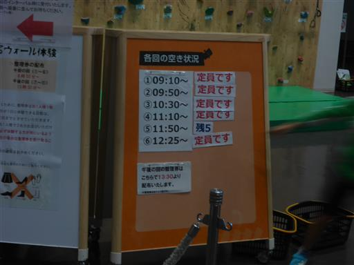
クライミングの予約時間まで少し暇なため周囲を散策。
こちらは「デジタルきゃんばす」。画面に映ったものを動かすゲームだが、
なかなか思い通りに動かない。
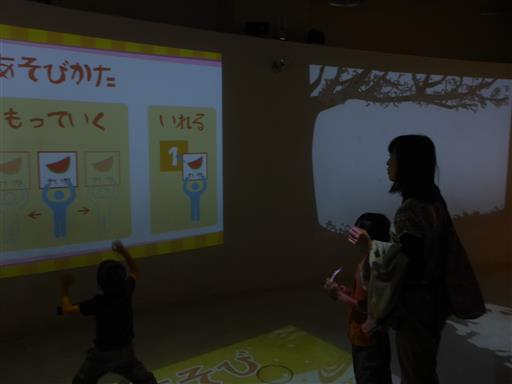
「クライミングぱーく」の時間になったので行ってみる。
9:30-9:40の10分の利用が可能で、まさに分刻みのスケジュールだ。
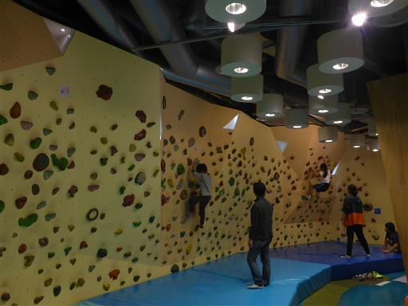
はじめてのクライミング。娘は比較的器用に登っている。
上に窓がついていて何かが飾られているので、それを見るのが楽しいようだ。
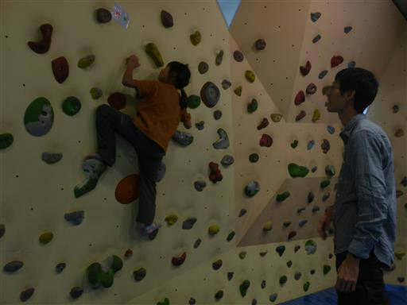
息子はまだ筋力が弱いのか苦戦。
途中まで登れるがすぐ落ちてしまう。
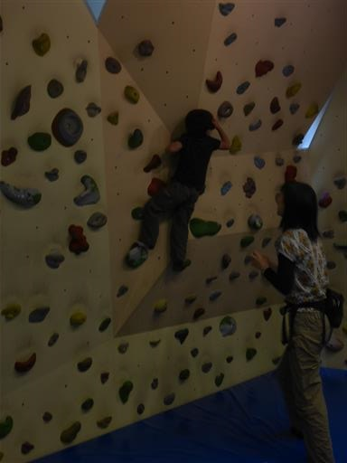
隕石。子供二人がかりでも持ち上げられない。
成分はほとんど鉄らしく、見た目よりもかなり重い。
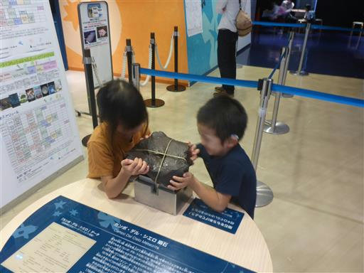
その後、プラネタリウムを見学。ストーリーがあって子供でも楽しめるようにできていた。
階段には太陽系の惑星がある。娘は「地球ちっちゃ！」と言っている。
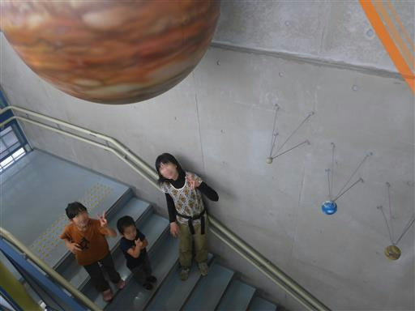
大混雑の「スペースあすれちっく」に一人で並んでいる間に
空いた時間で子供たちは動物の体のお勉強。
息子はすぐに退屈してしまったようだ。
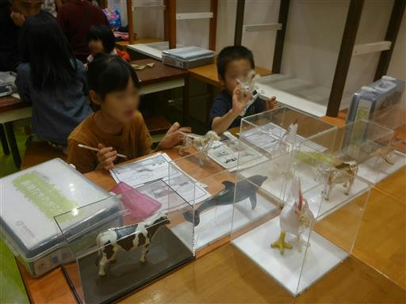
1時間並んで「スペースあすれちっく」に入場。
3層構造のネットで上下を行き来できるようになっている。
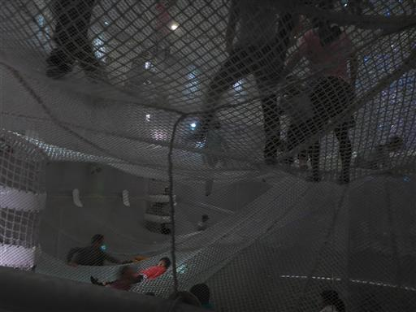
上下を行き来できる筒。狭いため大人が移動するのは結構苦しい。
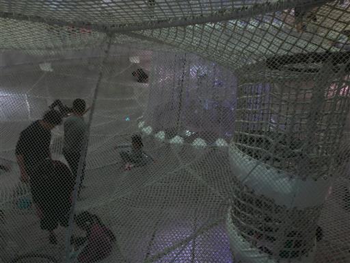
下から眺めた景色。デザインも優れた施設だ。
安全上、内部はカメラ等持ち込み禁止のため、撮影は外からのみだ。
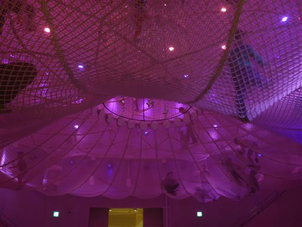
昼食をとったら、朝一に予約しておいた「がんばるウォール」に挑戦。
ここでも娘はスイスイ登って行く。
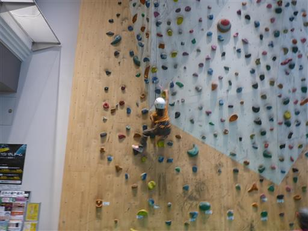
あっという間にゴールに到達。ロープに捕まって下りてくるのも楽しかったようだ。
小学生以上の施設のため、一人参加できなかった息子は不機嫌だ。
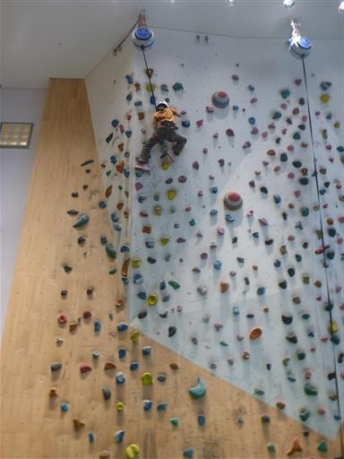
お昼を過ぎてどこも大混雑になり、利用できる施設がなくなってきたため、
最後にクイズに参加してから帰ることにする。
ギャラクシティは無料というところが素晴らしく、
もう少し家から近ければ何度でも通う価値がありそうだ。
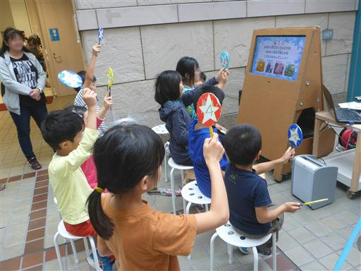